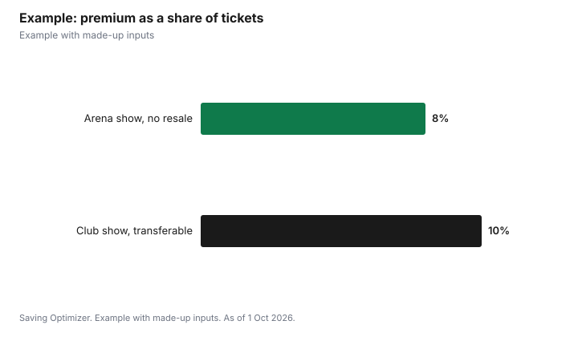

Entertainment · Canada
Is Ticket Insurance Worth It in Canada? What Event Ticket Protection Covers
Ticket insurance is worth it mainly for expensive, non-refundable tickets bought far in advance, when an illness, injury, family emergency or travel delay could stop you from going. It is not worth it if your worry is that you might change your mind, because the main policy sold with Ticketmaster Canada purchases, Allianz Event Ticket Protector, says it does not cover a personal change in plans. The policy reimburses non-refundable ticket costs up to $1,000 when you miss an event for a listed covered reason, and excludes pre-existing medical conditions within a 90-day look-back, foreseeable events and pandemics. Compare the premium with the ticket price and how likely a covered problem really is, and check whether you can resell or transfer the ticket instead.
Key takeaways
- Allianz Event Ticket Protector is offered with Ticketmaster Canada purchases.
- It covers listed reasons such as unforeseen serious illness, injury, family death and travel delays.
- It does not cover a personal change in plans.
- Benefit maximum: $1,000 for ticket cost, with separate $1,000 limits for reissue and change fees.
- Pre-existing conditions, foreseeable events and pandemics are excluded.
- Example with made-up inputs: when a premium makes sense and when it does not.
What the policy covers
Ticketmaster Canada's help centre says Allianz ticket protection reimburses 100% of the ticket price, including taxes and shipping, and that your financial loss may be covered if you cannot attend. The Allianz policy wording for Event Ticket Protector says it reimburses non-refundable ticket costs if you are unable to attend an event bought through a primary ticket outlet because of a covered reason. It is underwritten by CUMIS General Insurance Company, part of The Co-operators group, and administered by Allianz Global Assistance.
| Benefit | Maximum |
|---|---|
| Event ticket cost | Up to $1,000 |
| Fees to reissue a lost or stolen ticket | Up to $1,000 |
| Venue change fees for a covered reason | Up to $1,000 |
Covered reasons
The policy lists specific reasons. A claim must fit one of them, and many come with time limits or documentation rules.
| Reason | Condition in the policy |
|---|---|
| Unforeseen serious illness or injury to you or your companion | Examined by a physician within 48 hours, who advises in writing not to attend |
| Life-threatening illness or hospitalization of a family member | Examined by a physician within 48 hours |
| Death of you, a family member or companion | On or within 30 days before the event |
| Common carrier delay or traffic accident en route | Prevents you from arriving |
| Layoff | After at least 3 continuous years with the same employer |
| Jury duty, subpoena or emergency service duty | As described in the policy |
| Home made uninhabitable | By flood, burglary, vandalism or natural disaster within 72 hours |
| Car breakdown | Within 48 hours of the event |
| Event cancelled | Venue or promoter does not reschedule or offer a refund |
What it does not cover
The general exclusions in the wording include pre-existing conditions, meaning an injury or illness during the 90 days before coverage starts that meets the policy's tests; making changes to personal plans; having a business or contractual obligation; expected or foreseeable events; epidemics or pandemics; war and terrorism; government orders; and mental, nervous or emotional disorders that do not require immediate hospitalization. Injuries while impaired above the stated blood alcohol level are also excluded.
- You just do not feel like going: not covered.
- Work schedules a meeting that night: business obligations are excluded.
- A known surgery date clashes with the event: likely foreseeable.
- A flare-up of a condition you were treated for recently: check the pre-existing condition rules.
- The event is postponed to a date you can attend: no loss to claim.
The 10-day window and claims
The wording says that if you are not satisfied, you can get a full refund of the premium within 10 days of the policy's issue date, as long as the event date has not passed, you have not used the ticket and you have not filed a claim. To claim, you contact Allianz Global Assistance for a claim form and submit documents such as the original unused tickets, invoices and proof of payment, proof of the illness or injury, and any refund received from the venue or promoter. Ticketmaster's insurance page also suggests it may not be too late to add protection after purchase, so check your order if you skipped it at checkout.
Before you buy: alternatives
- Organizer refunds: if the event is cancelled, organizers usually refund through the original seller, without insurance.
- Resale or transfer: if you cannot go, reselling or transferring the ticket can recover money for any reason, subject to event terms. In Ontario, resale is capped at the original total plus taxes and platform fees.
- Credit card coverage: some cards include travel or trip cancellation insurance; read your card's certificate to see whether event tickets are covered, since many are written for travel.
- Travel insurance: if you are flying to a concert, a trip cancellation policy may cover the trip and possibly the ticket; compare wording.
A quick decision test
| Situation | Lean toward insurance? |
|---|---|
| Expensive tickets, months away, no resale allowed | Yes, consider it |
| Cheap tickets you could resell easily | Probably not |
| Recent illness or ongoing treatment | Read pre-existing condition rules first |
| Worried you might lose interest | No; not covered |
| Travelling by air or train to the event | Consider, since carrier delays are a listed reason |
| Event in a few days | Less value; less time for things to go wrong |
Example with made-up inputs
These numbers are an example with made-up inputs. A fan buys two arena tickets for $600 all-in, nine months ahead, for an event that does not allow resale. A made-up premium of $48 is 8% of the ticket price. If she thinks there is at least a 1 in 12 chance that a covered problem, such as an illness or a flight delay, will stop her from going, the premium is roughly break-even on expected value, and it also removes the risk of a $600 loss. A friend buys $90 of club tickets two weeks ahead that can be transferred; a made-up $9 premium buys little, since he could transfer the tickets for any reason.
| Buyer | Ticket cost | Premium (made up) | Premium as % of tickets | Resale allowed? |
|---|---|---|---|---|
| Arena show, 9 months out | $600 | $48 | 8% | No |
| Club show, 2 weeks out | $90 | $9 | 10% | Yes |

Steps
- Check whether the event allows resale or transfer.
- Read the covered reasons and exclusions before paying.
- Compare the premium with the ticket price.
- Check your credit card and travel insurance first.
- If you buy, keep the policy, invoices and tickets together.
- Use the 10-day window if you change your mind about the policy.
Common mistakes
- Buying insurance to cover a possible change of plans.
- Assuming a chronic condition will be covered.
- Missing the 48-hour physician exam for an illness claim.
- Paying for insurance on a ticket you could easily resell.
Related: refunds when a concert is cancelled or postponed and safer resale.
Sources
- Ticketmaster Canada Help, What is covered by Allianz Ticket Protection?, help.ticketmaster.ca, as of 1 Oct 2026.
- Ticketmaster Canada, Event ticket insurance, ticketmaster.ca/insurance, as of 1 Oct 2026.
- Allianz Global Assistance, Event Ticket Protector policy wording for Ticketmaster purchases (form ETP0121), allianz-assistance.ca, as of 1 Oct 2026.
- Government of Ontario, Buying tickets to events in Ontario, ontario.ca, as of 1 Oct 2026.
- Premiums and ticket prices in the example are made-up inputs.
Frequently asked questions
Is ticket insurance worth it in Canada?
Mainly for expensive, non-refundable tickets bought far ahead, when illness, injury, a family emergency or travel delay could stop you from going.
Does Ticketmaster insurance cover a change of plans?
No. The Allianz Event Ticket Protector wording says it does not cover cancellation due to a personal change in plans.
What is the maximum Allianz ticket insurance pays?
The policy wording lists up to $1,000 for ticket cost, with separate $1,000 limits for reissue fees and change fees.
Are pre-existing conditions covered?
No. The policy excludes pre-existing conditions, using a 90-day look-back before coverage starts.
Can I cancel ticket insurance?
The wording allows a full premium refund within 10 days of issue if the event has not passed, the ticket is unused and no claim is filed.
Is a cancelled event covered?
The policy covers an event cancelled by the venue or promoter only if it is not rescheduled or refunded; organizer refunds normally come first.
Researched and drafted with AI assistance and fact-checked against official Canadian sources. How we create content.
Disclosure: Saving Optimizer may earn a commission if a partner link is added later, such as an insurance or credit card offer type. No partnership is claimed on this page. Education only, not insurance advice; read your policy.